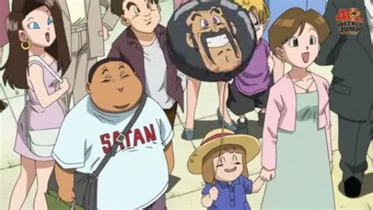

A Snapshot of Earthlings
Introduction
Humans (or Earthlings) are the major race inhabiting the Planet Earth. They are low level beings with very minimal Ki control and prefer to live a simplistic life on their home planet. However there are several instances of Earthlings managing Ki control to a very high degree. Humans like Master Roshi and Master Shen are just some examples. These Earthlings went on to train more earthlings and continued to perfect Ki control. This shows that the earthlings are capable of utilising Ki. The existence of Ki has been concealed from the majority of the human population and remains under the regulation of the Dragon Warriors.
Body Structure and Transformations
The body structure of Humans is well, Humanoid!. As of transformations, there is no such instance shown in the Dragon Ball Series.